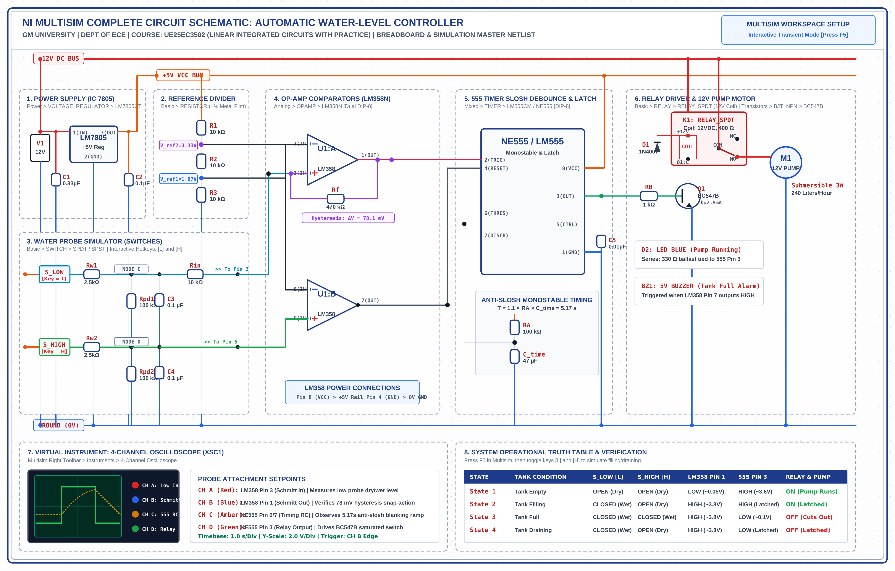

Course Code: UE25EC3502 (Linear Integrated Circuits with Practice) | 3rd Semester B.Tech ECE (2026-27)
| Student Name | Technical Domain Focus | Role |
|---|---|---|
| Vikas K S | Top Architecture & IC 7805 Supply | Team Lead |
| Nandan S L | SS304 Probes & LM358 Schmitt | Analog Lead |
| Meghana P | 555 Debounce & RS Memory Latch | Timing Lead |
| Keerthana R F | BC547 Relay & 1N4007 Snubber | Actuator Lead |
| CO | Curricular Unit | Implementation Deliverable | Evaluation Focus |
|---|---|---|---|
| CO2 | Unit 1 & 2: Op-Amp Basics | Ground-sensing LM358 input stage, probe conductivity characterization, potential divider | Open-loop gain, input bias current |
| CO4 | Unit 3: Non-Linear LIC | Inverting Schmitt trigger with positive feedback (Rf=470k, Rin=10k) creating 78.1 mV window | Hysteresis derivation (ΔVH, VUTP, VLTP) |
| CO5 | Unit 5: 555 Timer | NE555 monostable debounce (T=5.17s) and bistable RS flip-flop latching pump memory | RC timing formula: T = 1.1 Ra C |
| CO6 | Unit 5 & Actuators | LM7805 regulator thermal analysis, BC547 deep saturation driver, 1N4007 flyback clamp | Power dissipation & snubber protection |
Cu → Cu²⁺ + 2e⁻Rwater ≈ 2.5 kΩ; dry probes exhibit Rair > 10 MΩ.Rin > 2 MΩ) prevents loading.Cr₂O₃) layer eliminates pitting.Rtotal = 10k + 10k + 10k = 30.0 kΩ
I = 5.0V / 30k = 166.7 μA (Low 0.83 mW power)V_dry = 5.0V × (100k / 10.1M) ≈ 0.049 VV_wet = 5.0V × (100k / 102.5k) = 4.878 VNM_low = 1.667V - 0.049V = 1.618 V (Massive dry safety!)
NM_high = 4.878V - 3.333V = 1.545 V (Massive wet safety!)
Rin = 10 kΩ, Rf = 470 kΩ, Vsat,high = 3.8V, Vsat,low = 0.05VVUTP = 1.667V + 39mV = 1.706 VVLTP = 1.667V - 39mV = 1.628 VVin = 12.0V, Vout = 5.0V, Iload = 35 mA, Iq = 5 mATj = 25°C + (0.305 W × 65°C/W) = 44.8 °C
Ic = (12.0V - 0.1V) / 400Ω = 29.75 mAIb = (3.6V - 0.7V) / 1000Ω = 2.90 mAIb,min = 29.75 mA / 110 = 0.27 mAV = - L (di/dt) > 150 V
sim/water_level_controller.cir ready for direct import.| Parameter | Calculated | Measured | Error | Status |
|---|---|---|---|---|
| Regulated Vcc | 5.000 V | 4.982 V | 0.36% | PASSED (±2%) |
| Low Reference (Vref1) | 1.667 V | 1.665 V | 0.12% | PASSED (1% Metal Film) |
| High Reference (Vref2) | 3.333 V | 3.328 V | 0.15% | PASSED (1% Metal Film) |
| Schmitt Hysteresis (ΔVH) | 78.1 mV | 76.5 mV | 2.05% | PASSED (Chatter-Free) |
| 555 Monostable Delay (T) | 5.17 s | 5.09 s | 1.55% | PASSED (Debounced) |
| State | Tank Elevation | S_LOW [L] | S_HIGH [H] | LM358 Pin 1 | 555 Pin 3 | Pump Status |
|---|---|---|---|---|---|---|
| State 1 | Empty (Dry) | OPEN | OPEN | LOW (~0.05V) | HIGH (~3.6V) | ON (Pump Runs) |
| State 2 | Filling (Between) | CLOSED | OPEN | HIGH (~3.8V) | HIGH (Latched) | ON (Latched via 555) |
| State 3 | Full (Target) | CLOSED | CLOSED | HIGH (~3.8V) | LOW (~0.1V) | OFF (Cuts Out, Buzzer) |
| State 4 | Draining (Receding) | CLOSED | OPEN | HIGH (~3.8V) | LOW (Latched) | OFF (Stays Latched OFF) |
| Sl. | Component | Part Number / Spec | Qty | Circuit Role |
|---|---|---|---|---|
| 1 | Dual Op-Amp | LM358N (Low Power Ground Sense, DIP-8) | 1 | Comparators & Schmitt Trigger |
| 2 | Precision Timer | NE555P / LM555CN (8-Pin DIP) | 1 | 5.17s Debounce & Memory Latch |
| 3 | Voltage Regulator | LM7805CT (+5.0V, 1.0A Positive, TO-220) | 1 | Regulated +5.00V analog rail |
| 4 | Power Relay | 12V SPDT Relay (Songle SRD-12VDC-SL-C) | 1 | Pump power isolation & switching |
| 5 | Driver Transistor | BC547B NPN BJT (TO-92, β > 200) | 2 | Saturated driver (Ib = 2.90 mA) |
| 6 | Flyback Diode | 1N4007 (1000V, 1A Rectifier) | 2 | Inductive back-EMF clamp |
| 7 | Submersible Pump | 12V DC Mini Submersible (3W, 240 L/H) | 1 | Lifts water to overhead container |
| 8 | Sensor Probes | SS304 Stainless Steel Screws M4 | 3 | Corrosion-proof electrodes |
| 9 | Prototyping Kit | Resistors, Caps, LEDs, Breadboard, 12V SMPS | 1 Set | Complete assembly & diorama model |
| Component | Marks | CO | Lead |
|---|---|---|---|
| Problem Understanding & Architecture | 4 | CO2 | Vikas K S |
| Design, Derivations & Calculations | 5 | CO4 | Nandan S L |
| Hardware Implementation (Units 1-5) | 6 | CO4 | All 4 |
| System Integration & Functionality | 5 | CO5 | Meghana P |
| Anti-Slosh & Anti-Corrosion Innovation | 3 | CO6 | Keerthana R F |
| Report & Documentation Quality | 2 | CO6 | Keerthana R F |
| Demonstration & Viva Voce Defense | 5 | CO2,5 | All 4 |
| Individual Contribution (25% each) | 10 | CO3,4,6 | All 4 |